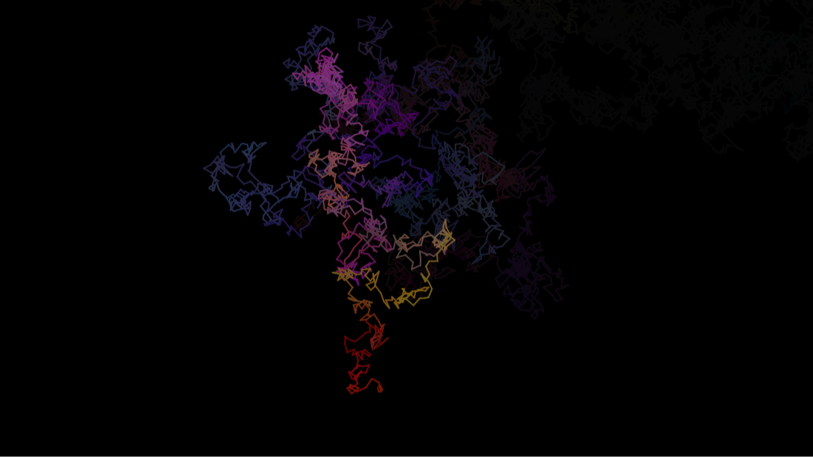

01 / Creative coding · p5.js
Grid 1.Color in motion.
A study in rhythm and randomness. Small lines, endless combinations.
Explore the project
01 / Creative coding · p5.js
A study in rhythm and randomness. Small lines, endless combinations.
Explore the project
02 / Generative art · p5.js
A wandering line leaves a trace. An experiment in movement, color, and the unexpected.
Explore the project03 / Creative coding · p5.js
Circles, squares, and triangles. A simple visual language, constantly rearranged.
Explore the project
04 / Photography · Selected moments
Light, places, and the small details that make me pause. A collection of moments worth keeping.
Explore the photographs